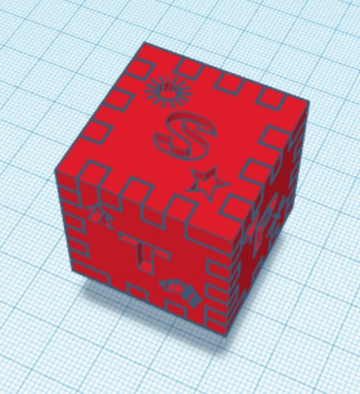

Vispārīgā informācija


Programma:https://www.tinkercad.com/dashboard
Idejas un visa projekta autors: Marija Sazoņenko
Izgatatavošanas datums: 29.01.2020.
Izgatavošanas vieta: Rīgas Valsts 1.ģimnāzija, Rīga, Raiņa bulvāris 8
Veiksmīgi izprintēto skaldņu daudzums: 2
Draugu atļauju - izmantot viņu gatavo kubu fotogrāfijas - daudzums: 1
Izmaksas: 0 €
Peļņa: 0 €